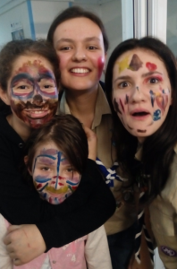

Jurnalul faptelor bune: Centrul Robănescu

Sâmbătă, 7 februarie, ne-am mobilizat pentru a face măcar o zi mai buna în viața unor copii. Așa ne-am început lista faptelor bune şi am ajuns la Centrul de Recuperare Neuropsihomotorie pentru Copii Nicolae Robanescu, care ne-a primit cu brațele deschise şi datorită colaborărilor din trecut.
Totul a început cu niște ateliere realizate special pentru copii. Fie ca erau la figurine din baloane, fie ca erau la pictat pe față sau pe foaie, atât copiii cât și cercetașii noștri au fost încântați de activitate și de distracție. Între timp, în bucătărie se pregăteau niște brioșe care au fost servite copiilor după masă. La final, după jocurile energizante realizate pentru dezmorțirea de după masă, am împărțit fiecărei familii și persoane câte un mic cadou adus de fiecare dintre noi. De asemenea, am reuşit să aducem şi o mică donaţie de cărţi, cu care am contribuit la dotarea bibliotecii centrului, deschisă pentru copiii mai mari, dornici de învățat. Copiii au fost foarte încântați de aceasta “zi altfel”, la fel și părinții acestora. Iată şi câteva impresii din partea cercetaşilor:
Ana: Am fost încântați de lista noastră de 10 fapte bune pe care ni le propunem și am vrut să începem și pusul lor în practică. Ne-am mobilizat destul de repede, cred că deja experiența își spune deja cuvântul, și am ajuns să putem dărui acestor copii o zi diferită.
Valentina: Proiectul de la Centrul Robanescu a reprezentat pentru majoritatea dintre noi o ocazie de a lasă lumea mai buna decât am găsit-o – aşa cum ne îndeamnă fondatorul nostru, al cercetaşilor – şi de a ne scoate în evidenţă calitățile şi de a ne corecta defectele. Pe lângă acest lucru, uşor-uşor, prin fapte de voluntariat precum acestea, prindem încredere în forțele proprii şi putem să ne unim mai bine ca grup.
Cecilia: Cred că la Centrul Robanescu sunt niște copii extraordinari care pot doar visa la anumite lucruri pe care noi ceilalți le avem fără să le conștientizăm importanţa. Eu personal am avut şi am ce învăţa de la asemenea oameni, de la simplul lor mod de a fi şi de a percepe activităţile pe care le vad. A fost impresionantă privirea lor în cele câteva momente în care așteptau să le modelam un cățeluș sau o floare din baloane şi se vedea că pentru ei viata e un joc dur pe care vor să-l câștige cu orice preț. Suntem fericiți că am putut să le facem ziua mai bună!
de Ada Ionescu